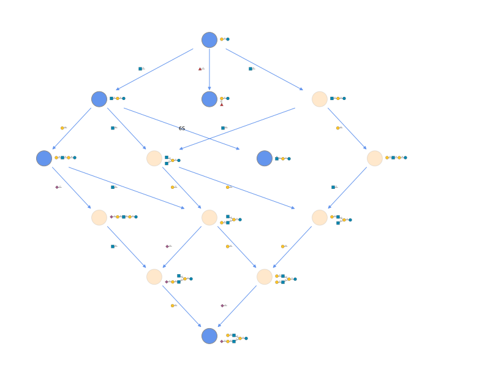
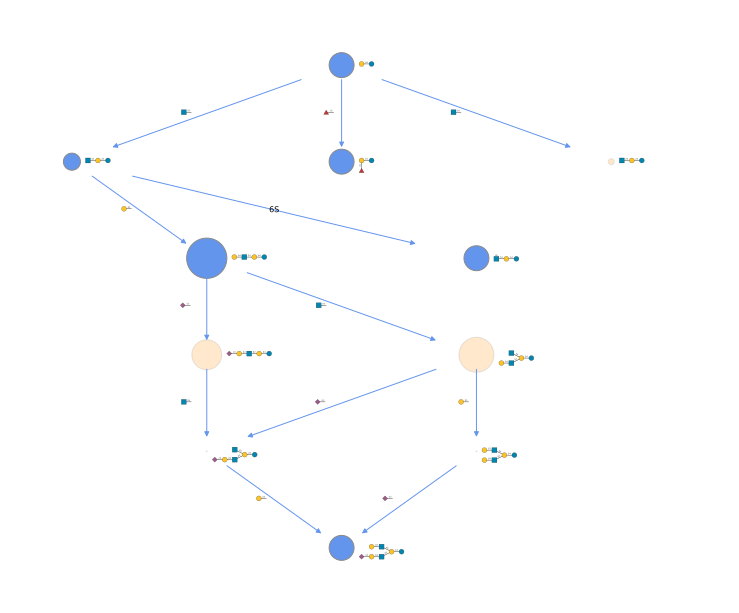
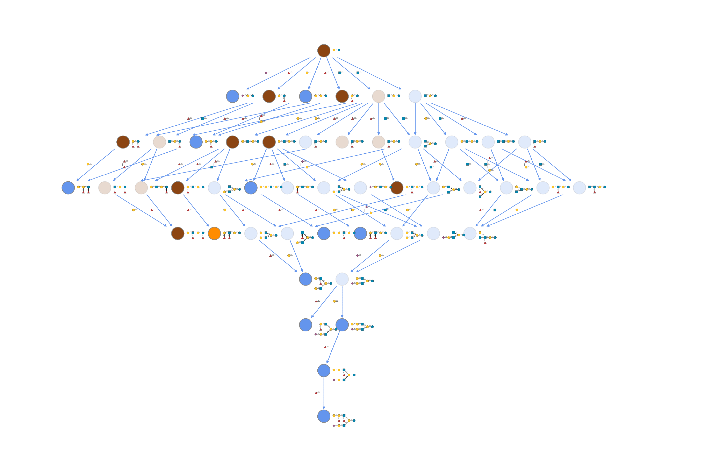

network contains functions to arrange and analyze glycans in the context of networks. In such a network, each node represents a glycan and edges represent, for instance, their connection via a biosynthetic step. It should be noted, since glycowork treats glycans as molecular graphs, that these networks represent hierarchical graphs, with the network being one graph and each node within the network also a graph. network contains the following modules:
biosynthesis contains functions to construct and analyze biosynthetic glycan networks
evolution contains functions to compare (taxonomic) groups as to their glycan repertoires
biosynthesis
constructing and analyzing biosynthetic glycan networks
construct_network
def construct_network( glycans:str|list[str] | pandas.DataFrame, # Glycan(s), or an abundance frame (glycans as first column or index, samples as columns) allowed_ptms:str|frozenset[str]=frozenset({'3P', '1P', '9Ac', 'OP', '6S', '6P', 'OAc', '4Ac', '3S', 'OS'}), # Allowed PTM(s) edge_type:str='monolink', # Edge label type: monolink/monosaccharide/enzyme permitted_roots:str|frozenset[str] |None=None, # Allowed root node(s) abundances:list[float]=[], # Glycan abundances in the same order as glycans; default:empty constraints:bool|list[dict] | pandas.DataFrame=True)->networkx.classes.digraph.DiGraph: # Biosynthetic network
def plot_network( network:networkx.classes.digraph.DiGraph, # Biosynthetic network plot_format:str='hierarchical', # Layout type: hierarchical/pydot2/kamada_kawai/spring edge_label_draw:bool=True, # Whether to draw edge labels lfc_dict:dict[str, float] |None=None, # Enzyme:log2FC mapping for edge width draw_glycans:bool=True, # Replace node labels with SNFG drawings, in a static figure filepath:str| pathlib.Path='', # Path to save the static figure (.svg/.pdf/.png) instead of showing the interactive plot compact:bool=False, # Use compact SNFG style glycan_size:str='small', # Glycan size preset ('small', 'medium', 'large') title:str|None=None, # Plot title; None for none, as before)->None: # Displays plot, or returns it as a Jupyter-renderable SVG when draw_glycans without a filepath
Visualize biosynthetic network
plot_network(network)

infer_network
def infer_network( network:networkx.classes.digraph.DiGraph, # Network to infer network_species:str, # Source species species_list:str|list[str], # Species to compare against network_dic:dict[str, networkx.classes.digraph.DiGraph], # Species:network mapping)->networkx.classes.graph.Graph: # Network with inferred nodes
Replace virtual nodes observed in other species
retrieve_inferred_nodes
def retrieve_inferred_nodes( network:networkx.classes.digraph.DiGraph, # Network with inferred nodes species:str|None=None, # Source species if multiple)->list[str] |dict[str, list[str]]: # Inferred nodes list or dict
Get inferred virtual nodes from network
update_network
def update_network( network_in:networkx.classes.digraph.DiGraph, # Input network edge_list:list[tuple[str, str]], # List of edges to add edge_labels:list[str] |None=None, # Labels for new edges node_labels:dict[str, int] |None=None, # Node virtual status (0: observed, 1: virtual))->networkx.classes.digraph.DiGraph: # Updated network
Update network with new edges and labels
trace_diamonds
def trace_diamonds( network:networkx.classes.digraph.DiGraph, # Biosynthetic network species_list:str|list[str], # Species to compare against network_dic:dict[str, networkx.classes.digraph.DiGraph], # Species:network mapping threshold:float=0.0, # Cutoff threshold nb_intermediates:int=2, # Number of intermediate nodes; has to be a multiple of 2 mode:str='presence', # Analysis mode: presence/abundance)->pandas.DataFrame: # Path analysis results, with proportion (0-1) of how often glycan has been experimentally observed in this path (or average abundance)
Analyze diamond motif (A->B,A->C,B->D,C->D) path preferences using evolutionary data
evoprune_network
def evoprune_network( network:networkx.classes.digraph.DiGraph, # Biosynthetic network network_dic:dict[str, networkx.classes.digraph.DiGraph] |None=None, # Species:network mapping species_list:str|list[str] |None=None, # Species to compare against node_attr:str='abundance', # Node attribute to use for pruning threshold:float=0.01, # Cutoff threshold nb_intermediates:int=2, # Number of intermediate nodes; has to be a multiple of 2 mode:str='presence', # Analysis mode: presence/abundance)->networkx.classes.digraph.DiGraph: # Evolutionarily pruned network (with virtual node probability as a new node attribute)
Prune network using evolutionary path preferences
plot_network(evoprune_network(network))

highlight_network
def highlight_network( network:networkx.classes.digraph.DiGraph, # Biosynthetic network highlight:str, # What to highlight: motif/species/abundance/conservation motif:str|None=None, # Motif to highlight; highlight=motif abundance_df:pandas.DataFrame |None=None, # Glycan abundance data; highlight=abundance glycan_col:str='glycan', # Glycan column name; highlight=abundance intensity_col:str='rel_intensity', # Intensity column name; highlight=abundance conservation_df:pandas.DataFrame |None=None, # Species-glycan data; highlight=conservation network_dic:dict[str, networkx.classes.digraph.DiGraph] |None=None, # Species:network mapping; highlight=conservation/species species:str|None=None, # Species to highlight; highlight=species)->networkx.classes.digraph.DiGraph: # Network with highlight attributes ('origin' (motif/species) or 'abundance' (abundance/conservation) node attribute)
Add visual highlighting to network nodes, to be used in plot_network
export_network
def export_network( network:networkx.classes.digraph.DiGraph, # Biosynthetic network filepath:str, # Output path prefix, will be appended by file description and type other_node_attributes:str|list[str] |None=None, # Additional attribute(s) for extraction)->None: # Saves network files (edge list/labels + node IDs and labels)
Export network to Cytoscape/Gephi compatible files
network_alignment
def network_alignment( network_a:networkx.classes.digraph.DiGraph, # First network network_b:networkx.classes.digraph.DiGraph, # Second network)->networkx.classes.digraph.DiGraph: # Combined network
Combine two networks into one with color coding (brown: shared, blue: only in a, orange: only in b)
from glycowork.network.biosynthesis import net_dicblackbear_network, brownbear_network = net_dic['Ursus_americanus'], net_dic['Ursus_arctos']plot_network(network_alignment(blackbear_network, brownbear_network))

get_maximum_flow
def get_maximum_flow( network:networkx.classes.digraph.DiGraph, # Biosynthetic network source:str|None=None, # Source node; default: inferred from the network's glycan class sinks:str|list[str] |None=None, # Target node(s); default:all terminal nodes)->dict[str, dict[str, float|dict[str, dict[str, float]]]]:
Estimate maximum flow and flow paths between source and sinks
get_max_flow_path
def get_max_flow_path( network:networkx.classes.digraph.DiGraph, # Biosynthetic network flow_dict:dict[str, dict[str, float]], # Flow dictionary as returned by get_maximum_flow sink:str, # Target node source:str|None=None, # Source node; default: inferred from the network's glycan class)->list[tuple[str, str]]: # Path edge list
Get path giving maximum flow value
get_reaction_flow
def get_reaction_flow( network:networkx.classes.digraph.DiGraph, # Biosynthetic network res:dict[str, dict[str, float]], # Flow results as returned by get_maximum_flow aggregate:str|None=None, # Aggregation: sum/mean/None)->dict[str, list[float]] |dict[str, float]: # Reaction flows (reaction: flow)
Get aggregated flows by reaction type
get_differential_biosynthesis
def get_differential_biosynthesis( df:pandas.DataFrame |str, # Glycan abundance data (first column: glycan sequences) group1:list[str|int] |None=None, # First group column indices/names (or time points in longitudinal analysis); default: from the frame's contrasts group2:list[str|int] |None=None, # Second group column indices/names (or time points in longitudinal analysis) analysis:str='reaction', # Type: reaction/flow/branchpoint paired:bool|None=None, # Whether samples are paired; default: from the frame longitudinal:bool=False, # Whether to do perform longitudinal analysis id_column:str='ID', # Sample ID column for longitudinal analysis in the ID-style of participant_time_replicate edge_type:str='monolink', # Reaction resolution: monolink/monosaccharide/enzyme virtual_damping:float=0.5, # Per-hop abundance decay for undetected intermediates)->pandas.DataFrame: # Differential analysis results (differential flow features and statistics OR reaction changes over time
Compare biosynthetic patterns between conditions/timepoints
def get_biosynthetic_coherence( df:pandas.DataFrame, # Glycan abundances (glycans as index or first column, samples as columns) group1:list[str] |None=None, # First group column names; default: from the frame's contrasts group2:list[str] |None=None, # Second group column names; default: from the frame's contrasts network:networkx.classes.digraph.DiGraph |None=None, # Pre-built network; built from df if not provided paired:bool|None=None, # Whether samples are paired; default: from the frame n_permutations:int=20000, # Label permutations for the exact shared-model null; 0 to skip random_state:int=42, # Seed for permutation reproducibility)->tuple[pandas.DataFrame, pandas.DataFrame]:
Quantify how strongly each condition’s glycome follows its own biosynthetic network, and which glycans decouple from it
extend_network
def extend_network( network:networkx.classes.digraph.DiGraph, # Biosynthetic network steps:int=1, # Number of extension steps; default:1 (becomes max_steps when auto_steps is True) to_extend:str|dict[str, int] |list[str]='all', # Nodes to extend (all, specific leaf node, target composition) strict_context:bool=False, # Whether to use network only to derive allowed reaction products; default:False auto_steps:bool=False, # Infer minimum steps to reach target composition; converts steps into max_steps when to_extend is a composition prioritize:bool=False, # Rank candidates by the maximum flow reaching them; only informative if the input network carries 'abundance' node attributes source:str='leaves', # Nodes to grow from: leaves (metabolic endpoints) or observed (every measured structure))->tuple[networkx.classes.digraph.DiGraph, set[str] |dict[str, float]]: # (Extended network, New glycans; a candidate:flow mapping sorted by descending flow when prioritize=True), optionally minimum number of steps from auto_steps
investigating evolutionary relationships of glycans
distance_from_embeddings
def distance_from_embeddings( df:pandas.DataFrame, # DataFrame with glycans (rows) and taxonomic info (columns) embeddings:pandas.DataFrame, # DataFrame with glycans (rows) and embeddings (columns) (e.g., from glycans_to_emb) cut_off:int=10, # Minimum glycans per rank to be included; default:10 rank:str='Species', # Taxonomic rank for grouping; default:Species averaging:str='median', # How to average embeddings: median/mean)->pandas.DataFrame: # Rank x rank distance matrix
Calculate cosine distance matrix from learned embeddings
distance_from_metric
def distance_from_metric( df:pandas.DataFrame, # DataFrame with glycans (rows) and taxonomic info (columns) networks:list[networkx.classes.graph.Graph] |dict[str, networkx.classes.graph.Graph], metric:str='Jaccard', # Distance metric to use cut_off:int=10, # Minimum glycans per rank to be included; default:10 rank:str='Species', # Taxonomic rank for grouping; default:Species)->pandas.DataFrame: # Rank x rank distance matrix
Calculate distance matrix between networks using provided metric
dendrogram_from_distance
def dendrogram_from_distance( dm:pandas.DataFrame, # Rank x rank distance matrix (e.g., from distance_from_embeddings) ylabel:str='Mammalia', # Y-axis label filepath:str='', # Path to save plot including filename)->None: # Displays or saves dendrogram plot
Plot dendrogram from distance matrix
check_conservation
def check_conservation( glycan:str, # Glycan or motif in IUPAC-condensed format df:pandas.DataFrame, # DataFrame with glycans (rows) and taxonomic levels (columns) network_dic:dict[str, networkx.classes.graph.Graph] |None=None, # Species:biosynthetic network mapping rank:str='Order', # Taxonomic level to assess threshold:int=5, # Minimum glycans per species to be included motif:bool=False, # Whether glycan is a motif vs sequence)->dict[str, float]: # Taxonomic group-to-conservation mapping
Estimate evolutionary conservation of glycans via biosynthetic networks
get_communities
def get_communities( network_list:list[networkx.classes.graph.Graph], # List of undirected biosynthetic networks label_list:list[str] |None=None, # Labels for community names, running_number + _ + label_list[k] for network_list[k]; default:range(len(graph_list)) random_state:int=42, # Random seed for reproducible community detection)->dict[str, list[str]]: # Community-to-glycan list mapping